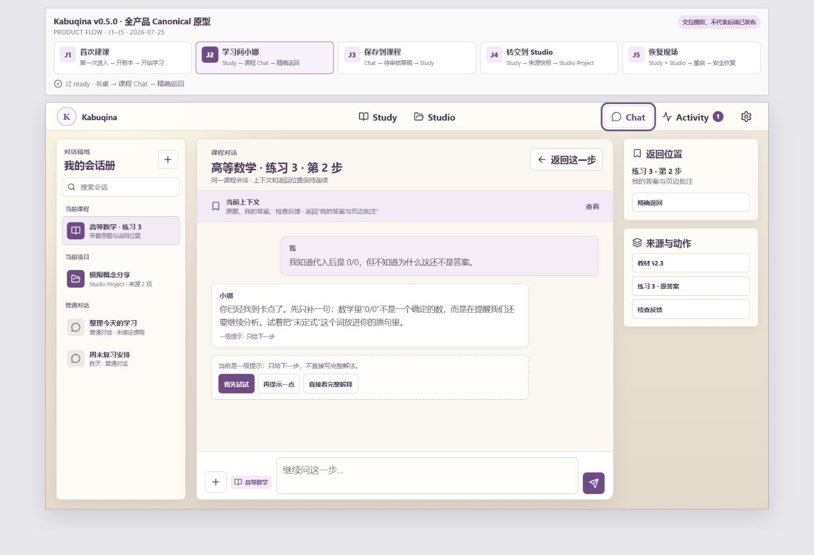
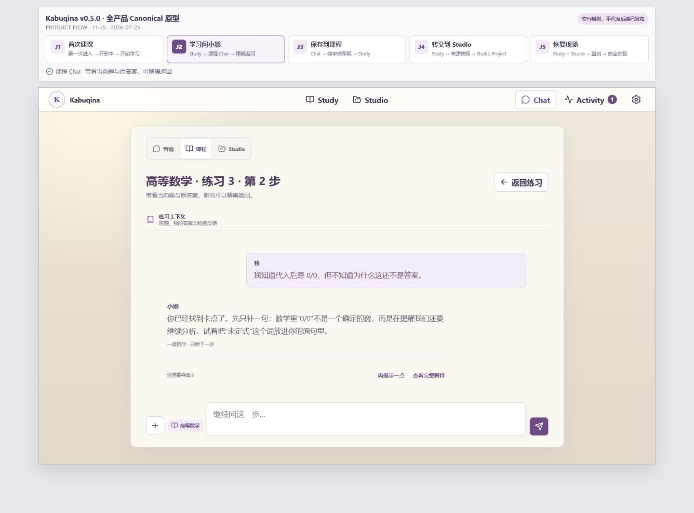
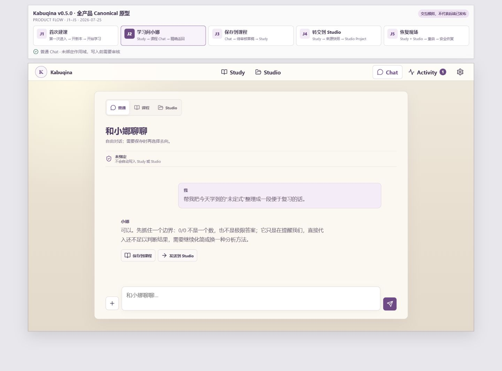
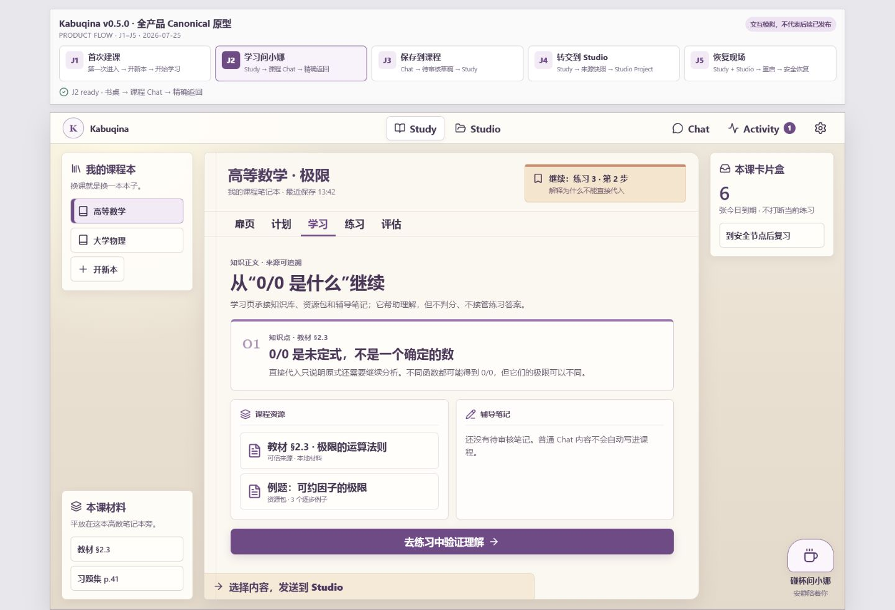
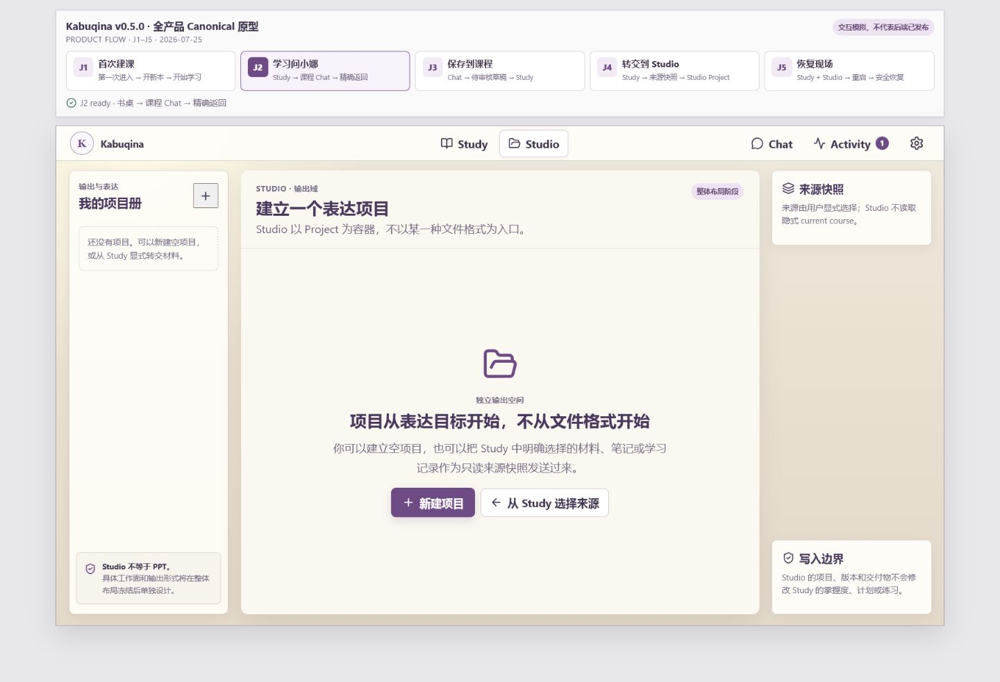
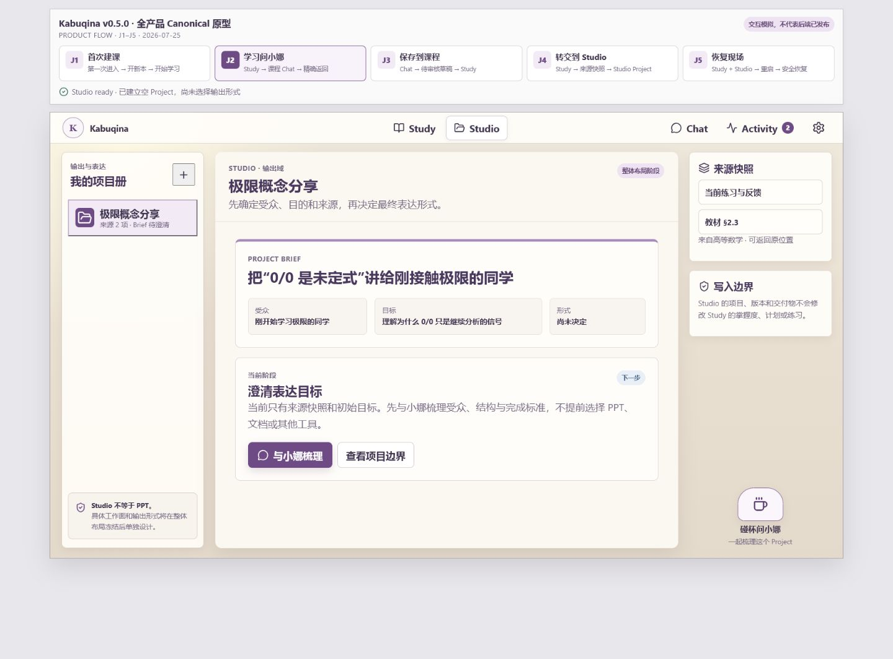

Kabuqina v0.5.0 · Chat 极简化 / Studio 小娜入口
Chat 主动降低信息密度；Studio 复用 Study 右下角同款小娜入口，并保留明确的 Project 作用域。
Chat：复杂工作台 → 留白对话画布
Source · 三栏 Chat

Implementation · 极简课程 Chat

Implementation · 极简普通 Chat

小娜入口：Study 基线 → Studio 补齐
Source · Study 右下角小娜

Source · Studio 改造前

Implementation · Studio Project 小娜
